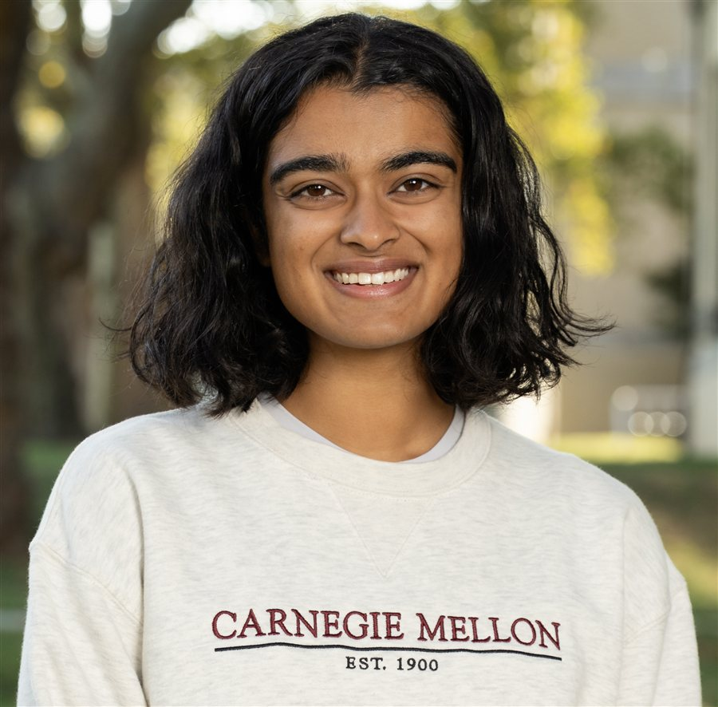

Hi, I'm Sruti Bapatla!
I'm an early career mechanical engineer from Carnegie Mellon University, where I also studied biomedical engineering (medical device track) and double bass performance.
I currently work at Duke University as an R&D Engineer, designing undergraduate projects that build students' engineering identity and deepen their understanding of engineering fundamentals, while teaching them to collaborate effectively with AI tools.
I've designed surgical instruments and robotics hardware for medical devices, and validated implant manufacturing. I am passionate about engineering education, and equity and accessibility in design. Thanks for stopping by!
Education
Carnegie Mellon University
Additional majors in Biomedical Engineering (Medical Device Track) and Double Bass Performance. GPA 3.85/4.0, University Honors.
Veritas University
Semester abroad focused on environmental science, sustainable development, and Spanish.
Honors
- Andrew Carnegie Scholar · One of 40 students selected as a senior representative for academic excellence, leadership, and service
- Carnegie Mellon Fifth Year Scholar · One of three students selected to spend a year on a community development project at CMU
- Carnegie Mellon Senior Leadership Recognition · Selected for making significant contributions to the CMU community
- Carnegie Mellon Mechanical Engineering Undergraduate Service and Leadership Award
- Pi Tau Sigma Honor Society · President
- Mortar Board Honor Society